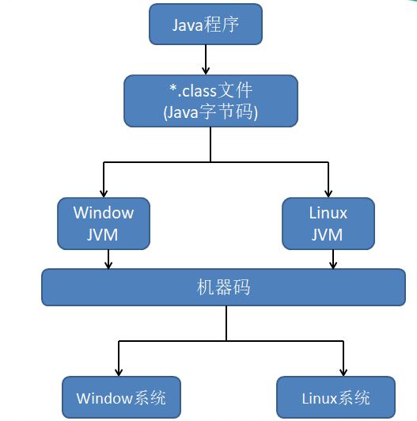
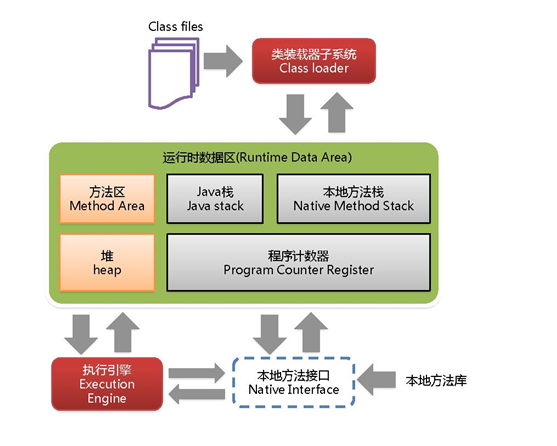
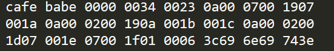
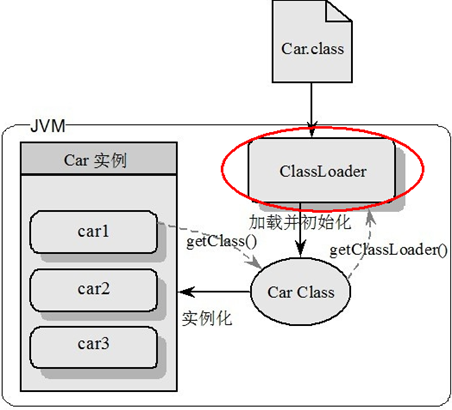
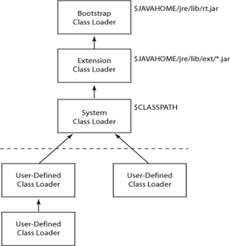
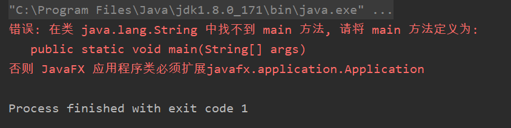

大家都知道，Java中JVM的重要性，学习了JVM你对Java的运行机制、编译过程和如何对Java程序进行调优相信都会有一个很好的认知。
废话不多说，直接带大家来初步认识一下JVM。
JVM(Java Virtual Machine)是一个抽象的计算机，和实际的计算机一样，它具有指令集并使用不同的存储区域，它负责执行指令，还要管理数据、内存和寄存器。
看到这里，可能不懂JVM的人，已经蒙圈了。没关系，下面让我详细为大家介绍JVM的体系架构图，或许你会明白些。
简单来说，JVM就是一个虚拟计算机。我们都知道Java语言其中的一个特性就是跨平台的，而JVM就是Java程序实现跨平台的关键部分。Java编译器编译Java程序时，生成的是与平台无关的字节码（也就是*.class文件），所谓的平台无关是指编译生成的字节码无论是在Window、Linux、Mac系统都是可执行。也就是说Java编译生成的*.class文件不是面向平台的，而是面向JVM的。不同平台上的JVM都是不同的，但是他们都是提供了相同的接口。图一为Java的大致运行步骤：

图一
引用一个《疯狂Java讲义》中提到例子来帮助大家理解JVM的作用：
JVM的作用就像有两只不同的铅笔，但需要把同一个笔帽套在两支不同的笔上，只有为这两支笔分别提供一个转换器，这个转换器向上的接口相同，用于适应同一个笔帽；向下的接口不同，用于适应两支不同的笔。在这个类比中，可以近似地理解两支不同的笔就是不同的操作系统，而同一个笔帽就是Java字节码程序，转换器角色则对应JVM。类似地，也可以认为JVM分为向上和向下两个部分，所有平台的JVM向上提供给Java字节码程序的接口完全相同，但向下适应的不同平台的接口则互不相同。
上面我们是初步介绍了JVM的作用，那么要深入去了解JVM我们就需要了解JVM的体系结构，请看图二：

图二
图二是JVM的体系架构图，接下让我们一起来聊一聊每一个部分都是什么意思。
1.类装载器子系统（ClassLoader）
负责加载class文件，class文件在文件开头有特定的文件标示，将class文件字节码内容加载到内存中，并将这些内容转换成方法区中的运行时数据结构并且ClassLoader只负责class文件的加载，至于它是否可以运行，则由Execution Engine决定。
Java编译生成的*.class文件就是通过ClassLoader进行加载的，那么这里就会有几个问题：
实际上，class文件在文件的开头是有特定的文件标识的，随便编写一个Java程序，编译生成一个class文件，打开后你都能看到如下内容：

cafe babe就是class文件的一个标识，ClassLoader负责加载有cafe babe的class文件，它将class文件字节码内容加载到内存中，并将这些内容转换成方法区中的运行时的数据结构并且ClassLoader只负责class文件的加载，至于它是否可以运行，则由Execution Engine决定，请看图三：

图三
Car.class文件通过ClassLoader进行加载到内存中，Car Class在内存中就相当一个模板，我们可以通过这个模板可以实例化成不同的实例car1、car2、car3。
不知大家会不会有一个疑问，ClassLoader加载Car.class在Java中是用什么类型的加载器加载的呢？在解答这个问题前我们先写个简单的代码看看：
//new一个Car对象
Car car = new Car();
//得到ClassLoader
ClassLoader classLoader = car.getClass().getClassLoader();
//打印结果
System.out.println(classLoader);结果为：
我们再来看看另外一组代码：
//new两个不同的对象
Car car = new Car();
String string = new String();
//得到ClassLoader
ClassLoader classLoader1 = car.getClass().getClassLoader();
ClassLoader classLoader2 = string.getClass().getClassLoader();
//打印结果
System.out.println(classLoader1);
System.out.println(classLoader2);结果为：
从上面我们可以知道，ClassLoader的打印结果一个是“sun.misc.Launcher$AppClassLoader@18b4aac2”，一个则是“null”，这是怎么回事呢，细心的朋友就可以发现这两个不同的对象中，其中car对象是我们自己写的一个类，string对象是系统自带的一个类。简单来说就是ClassLoader会根据不同的类选择不同的类加载器去进行加载。这里就牵扯到了ClassLoader的分类
ClassLoader的类别：
一般我们自己所写的类用的类加载器都是AppClassLoader，就是上图所示的“sun.misc.Launcher$AppClassLoader@18b4aac2”，而为什么string这个对象是”null“呢？实际上，这个“null”指的就是使用BootStrap这个加载器。
那可能有人有疑问，自己定义的类用AppClassLoader，能理解，因为car这个对象输出的类加载器名字中有AppClassLoader这个字样，但是为什么string这个对象是”null“，从哪里可用体现是用BootStrap这个加载器呢？是这样的，BootStrap累加载器相当于扩展类加载器、应用程序类加载器的祖宗，若是用了BootStrap，由于BootStrap上一级已经没有了，所以就用“null”来表示
其实我们可以找一下String这个类在JDK的位置：
$JAVA_HOME/jre/lib/rt.jar/java/lang所有在这个路径$JAVA_HOME/jre/lib/rt.jar这个jar包下的类都是用BootStrap来加载的。
下面请看图4：

图四
这张图就可以很清晰得看到：
1.所有在$Java_Home/jre/lib/rt.jar是通过BootStrap加载的
2.所有在$Java_Home/jre/lib/ext/*.jar是通过Extension加载的
3.所有在$CLASSPATH是通过SYSTEM加载的（应用程序类加载器也叫系统类加载器，加载当前应用的classpath的所有类）
接下来我们再来看一个例子：
如果创建一个java.lang包，然后创建String类，打印一句话执行会怎么样呢？
package java.lang;
public class String {
public static void main(String[] args) {
System.out.println("Hello World");
}
}效果如下：

可以看到程序报错了，说是找不到main方法，可是明明就有main方法为什么没有执行呢？这里就涉及了双亲委派机制
双亲委派机制：
当一个类收到了类加载请求，他首先不会尝试自己去加载这个类，而是把这个请求委派给父类去完成，每一个层次类加载器都是如此，因此所有的加载请求都应该传送到启动类加载器中，只有当父类加载器反馈自己无法完成这个请求的时候（在它的加载路径下没有找到所需加载的Class），子类加载器才会尝试自己去加载。
所以它实际的运行过程是这样的：
所以上面的例子，他会找到jdk中java.lang.String这个类，这个类确实是没有定义main方法，简单来说它执行的类是JDK中java.lang.String这个类，而不是我们自己定义的类。
那用双亲委派机制有什么好处呢：
采用双亲委派的一个好处是比如加载位于 rt.jar 包中的类 java.lang.Object，不管是哪个加载器加载这个类，最终都是委托给顶层的启动类加载器进行加载，这样就保证了使用不同的类加载器最终得到的都是同样一个 Object对象。
2.执行引擎(Execution Engine)
执行引擎负责解释命令，提交给操作系统执行，这里对执行引擎就不做过多的解释了，只要知道他是负责解释命令的即可。
3.本地方法接口(Native Interface)和本地方法栈(Native Method Stack)
目前该方法使用的越来越少了，除非是与硬件有关的应用，比如通过Java程序驱动打印机或者Java系统管理生产设备，在企业级应用中已经比较少见。因为现在的异构领域间的通信很发达，比如可以使用 Socket通信，也可以使用Web Service等等，不多做介绍。
如果在程序中有见到native关键字，就代表不是Java能完成的事情了，需要加载本地方法库才能完成
4.PC寄存器(Program Counter Register)
每个线程都有一个程序计数器，是线程私有的,就是一个指针，指向方法区中的方法字节码（用来存储指向下一条指令的地址,也即将要执行的指令代码），由执行引擎读取下一条指令，是一个非常小的内存空间，几乎可以忽略不记。
这块内存区域很小，它是当前线程所执行的字节码的行号指示器，字节码解释器通过改变这个计数器的值来选取下一条需要执行的字节码指令。
如果执行的是一个Native方法，那这个计数器是空的。
PC寄存器用来完成分支、循环、跳转、异常处理、线程恢复等基础功能。由于使用的内存较小，所以不会发生内存溢出(OutOfMemory)错误。
那么这篇文章先讲到这里，下篇文章中我们再继续来聊一聊方法区、栈和堆..........